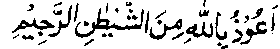
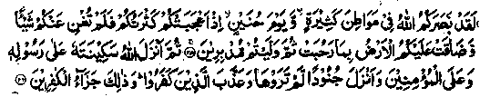
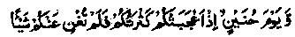

Chapter Five · Section (b): Ahadith threatening punishment for non-payment of Zakaat
9. Proprieties to be observed while paying Zakaat
Imaam Ghazali Rahmatullah alaihe. says that whosoever wants to pay Zakaat, keeping the Akhirah in view, must follow certain rules and observe certain proprieties, and has explained those rules and proprieties in great detail. In the following pages, these rules are discussed briefly and with occasional necessary explanations. (It is not, of course, an exact translation.) Imaam Ghazali Rahmatullah alaihe has given eight guide-lines regarding payment of Zakaat: -
1. We should know, in the first instance, why Zakaat was made incumbent and made one of the five essentials (pillars) of Islam. These are three reasons;
(a) In reciting the Kalimah, a man asserts his belief in Allah Ta'ala as the only Deity to be adored, Who has no associates or partners. The profession of this faith becomes a truth when his heart is knowingly dissociated from everything else, as true love admits of no rivalry or partnership, and mere verbal expression of love has no value. A man’s true love is put to trial when there are other rivals, each claiming his love, wealth being something that man loves by nature. So, Allah Ta'ala has made it incumbent upon men to spend wealth, as a touchstone for the truth of their love for Him and their belief in Him as the only Being worthy to be obeyed. Through Sadaqah a man’s love for Allah Ta'ala is judged, as indicated in the Ayat:
Lo! Allah has bought from the Mo’mineen (believers) their lives and their wealth because Jannah will be theirs. (at-Taubah:111)
‘Buying of lives’ is through Jehaad; it is, of course, easier to give money than to offer one’s life. On the basis of spending money, as a trial of one’s love for Allah Ta'ala, men are found to fall into three categories:
Firstly, those who are true in their assertion of the Oneness of Allah Ta'ala and who associate no partners with Him in their love for Him. They are the ones who fulfil their covenant perfectly, as they sacrifice all their belongings for the sake of Allah Ta'ala, keeping back neither a dirham nor a dinar. The requirement of obligatory nature of Zakaat becomes meaningless in their case. It is reported of certain divines when they were asked, ‘How much Zakaat is due on two hundred Dirhams?' They replied, ‘According to Shariah it is incumbent upon common people to spend five Dirhams out of every two hundred Dirhams, but for us, it is necessary to spend everything, keeping nothing back". That is why Abu Bakr Siddiq Radhiallaho anho presented all he possessed to Rasulullah Sallallaho alaihe wasallam, keeping nothing with 'himself, thus proving his perfect love for Allah Ta'ala.
Secondly, there are people of average sort who keep back some wealth to serve them for their needs and give the rest away. They do not indulge in luxuries of life but keep only sufficient provision for their own use and spend the surplus wealth for the cause of Allah. They, too, do not restrict their spending to the prescribed limits of Zakaat, but spend whatever exceeds their requirements, which is often more than the amount due. That is why some followers (Tabi‘een) of the Sahabah Radhiallaho anhum like Imaam Nakha'ee, Sha'bee and others Rahmatullah alaihim are of the view that there is much more due on property, apart from Zakaat, and they hold that it is incumbent upon the rich to fulfil the needs of the poor, if they find them in need of help, even if they have to give more than the Zakaat due on their property. However, according to ‘Fiqh,’ the sounder view is that it is Fardh-e Kifayah (a general obligation, whose fulfilment by an adequate number absolves all) to supply the need of an extremely poor man who is in danger of suffering death. The opinions differ as to whether it is obligatory to give free help to such a person, or mere lending of money can absolve people of their responsibility. (Those who are in favour of lending money, rather than free help, fall into the third category defined below.)
Thirdly, there are people who spend strictly in accordance with the prescribed standards, neither more nor less than the calculated amount. The majority of people fall into this last category: they love worldly wealth and spend like the niggardly, being less concerned with the life in the Akhirah.
Imaam Ghazali Rahmatullah alaihe has not mentioned the fourth category, viz. Those who spend less than the prescribed amount, or do not pay Zakaat at all. Such people are altogether false in their claims of love for Allah Ta'ala, so he did not regard them as worthy of mention.
(b) A second object in making Zakaat obligatory (Fardh) is to purify men’s hearts of miserliness, which is a fatal attribute. Rasulullah Sallallaho alaihe wasallam has said, "Three things are fatal attributes:-
(i) Niggardliness which is practised: i.e. if a person is miserly by nature, but behaves generously in defiance of his habit, miserliness will not harm him; miserliness becomes fatal only when a person actually acts like a miser.
(ii) Passion which is acted upon. If a man of ardent passions exercises restraint, no harm will come to him; passion becomes fatal only when it is indulged in.
(iii) Self-conceit i.e. a man’s considering his own opinion as the best. There are many Ayaat of the Holy Qur’an and numerous Ahadith deprecating miserliness, some of which we have quoted in Chapter Two of this book. The only way to cure a person of miserliness is for him to cultivate the habit of spending money. When it is desired that a man should cease to love someone, he is advised not to associate with that person and, with effort, try to keep away from him. Zakaat is called a ‘purifier’, as it purifies a man of the filth of avarice and miserliness. The more generously a man spends and the happier he is while spending for the love of Allah, the more purified he will be of miserliness."
(c) Another reason for making Zakaat obligatory appears to be that it is an expression of gratitude to Allah Ta‘ala for the bounty of wealth bestowed by Him. Each of us receives countless Bounties from Allah Ta'ala, both in the form of wealth and in the form of physical faculties; so, the physical devotions serve as thanksgiving for bodily gifts, while devotions involving spending of money serve as thanksgiving for the bounties of wealth and other worldly goods How mean and ungrateful is a person who sees a beggar suffering abject poverty and destitution, but his heart is not moved with feelings of gratitude for Allah Ta'ala, Who has bestowed numerous bounties upon him, saving him from the humiliation of begging from others and, above all, raised him to a position where others beg favours of him. Is it not binding upon him to express gratitude to Allah Ta'ala and spend at least one tenth (of the produce of his lands) or one fortieth (of the money kept with him for a year), for the pleasure of Allah Ta'ala?
2. Another propriety to be observed concerns the proper time for giving away Zakaat. In the first place, it is important that one should hasten to pay Zakaat and give it away even before it falls due, because this shows his concern and willingness for obeying the commandments of Allah Ta'ala. And, it also delights the hearts of the needy persons. On the other hand, if a man makes delay in giving Zakaat, he may suffer an affliction or a loss of his property. The Ulama who hold that it is necessary to lose no time in paying Zakaat also say that it is sinful to make delay in its payment. So, when it occurs to a person to spend money for the sake of Allah, he should not delay in doing so and regard it as an idea put in his mind by an angel, as a Hadith says, "Everybody is being advised by an angel and tempted by a Shaitan. The angel wants him to do good and to follow the truth, so, when anyone finds, within himself, an inclination to do good, he should express gratitude to Allah Ta'ala. The Shaitan persuades a man to do evil and go against what is true, so when a person finds himself inclined towards evil, he should recite:

I seek refuge in Allah against Shaitan, the outcast one". (Saadah)
A Hadith says that (allegorically) the heart of man is between two fingers of Allah Ta'ala, which He turns about as He wills. The first thought of spending for the sake of Allah might be followed by a second thought, a prompting by the Shaitan to keep money with oneself. For, Shaitan keeps on forewarning a person against impending want and need. We have already discussed this point under Ayat No. 2 in Chapter Two.
And following the exhortation of the angel, there is an evil prompting by Shaitan. So, a man should hasten to pay Zakaat before the second thought occurs to him. And if anyone wants to pay the entire amount of Zakaat due from him, at a time, it is good to specify a month for its payment. It would be better to appoint, for the purpose, one of the sacred months, in order that one might earn maximum blessings for Zakaat. For example, Muharram is a sacred month, being the first month of Hijri calendar and one of the four sacred months of the year. Besides, the tenth of Muharram is an auspicious day. For, according to a Hadith, if anyone spends liberally on his family on the Day of Aashurah (10th of Muharram), Allah Ta'ala will be liberal to him the rest of the year. Another sacred month is Ramadhan; a Hadith says that Rasulullah Sallallaho alaihe wasallam was the most generous of men, and during Ramadhan he was more generous than the wind which blows freely. In this month, there is a night (Lailat-ul-Qadr) which is better than a thousand months and, during it, Allah’s Favours to His men go on increasing day by day.
Similarly, Zul-Hijjah is a sacred month and a great many blessings are associated with it; it is the month of Hajj, of which the first ten days are called ‘Ayyam-um-Ma'loomat’ (the well-known days) and the next three days (Ayyaam-e-Tashreeq) or the 11th, 12th and 13th day of the month) have been termed, in the Holy Qur’an, as Ayyam-um Ma'doodat (the appointed days). The Holy Qur’an exhorts the Mo’mineen (Believers) to make excessive Zikr of Allah Ta'ala during these days (hence their blessedness).
Therefore, if anyone decides to pay Zakaat during Ramadhan every year, he should fix the last ten days of the month for this purpose, while a man giving it during Zul-Hijjah should do so during the first ten days.
The humble author Muhammad Zakariyya Rahmatullah alaihe would take the liberty to suggest that, as every body does have some idea of the entire amount payable on his property for a year, he should bear it in his mind and keep on paying Zakaat little by little throughout the year. And, when the year comes to an end, he should work out the exact amount payable on his property and pay off the difference that still remains due from him. If the calculations show that what has been spent is more than what was due, he should express gratitude to Allah Ta'ala, with whose aid he has been able to spend more than the prescribed amount. This method of paying Zakaat has three advantages: -
(i) If the Zakaat payable for the whole year is a large amount, it is difficult to give it away at a time. And it is desirable that Zakaat should be paid willingly.
(ii) One does not often find correct occasions for giving Zakaat; by this method, a man may spend whenever suitable circumstances arise. On the other hand, if a man calculates Zakaat at the end of the year and then sets it aside for spending in small amounts during the following year, each day that passes will count against him for delaying the payment of Zakaat. Besides, one might, through accident, cause injuries to himself or lose his property and, may consequently, fail to pay Zakaat in full and thus commit a sin.
(iii) If a man gives away in small amounts, he may spend by chance more than what is due from him every year. Giving away in excess of what is actually due is a commendable act of virtue. As for those who make calculations and pay the Zakaat due for the year in one instalment, most of them find it hard to pay more than the prescribed amount. In this connection, it should be kept in mind that Zakaat falls due after every lunar year and not after a solar year. Some people maintain the account of Zakaat according to the solar calendar and thus delay its payment by ten days successively every year. In this way, after thirty six years of lunar calendar, they will have paid Zakaat for thirty five years only and the dues for one complete year shall remain outstanding against them.
3. It is also proper to give Zakaat secretly, which has many advantages: the giver is saved from self-esteem through display of generosity; and the receiver is saved from humiliation, as his poverty remains concealed. Hence it is more rewarding to give Zakaat secretly, unless there are good reasons for spending it openly. The ultimate aim of giving Sadaqah is to purify a man from the evils of avarice and niggardliness. And the one giving it openly may develop in his heart a desire for worldly recognition. This evil is more harmful to the soul than avarice and miserliness, and most people suffer from a weakness for fame and recognition.
The evil of miserliness shall assume the form of a scorpion to sting the miser in the grave, while a man’s love for worldly recognition shall become a python that shall bite him. So, the one who controls his miserliness, but becomes a victim of worldly recognition or fame, is like a man who kills a scorpion and feeds it to a python, which grows stronger and more dangerous. It is, of course, necessary to kill both the scorpion and the python; it may be that killing the python is more important than killing the scorpion.
4. Sometimes, it is wise to pay it openly for good and religious reasons. For example, if a person wants to exhort others or thinks that others will follow his example or has some other religious motives in his mind, it will be more rewarding for him to pay Zakaat openly. We have already discussed these two points at length under Ayat No. 9 in Chapter One.
5. Another guideline for giving Sadaqah is that one should protect it from being wasted through ‘mann’ (taunting the poor about one’s favours to them) or ‘azaa’ (causing harm to the one who receives Sadaqah). ‘Mann’ is the sin of a person who is conscious of his favours to the people and keeps reminding them of their obligations. ‘Azaa’ means suffering caused to others; it includes mental, discomfort caused by the vanity of a person who keeps reminding them that their needs are met through his generosity. We have already discussed this subject in detail under Ayat No. 8 in Chapter one.
. 6. Still another propriety to be observed while giving Zakaat is that a man should regard the amount of his Zakaat, however large, to be an insignificant amount Otherwise, he may fall into the sin of pride and exultation in what he has accomplished by way of virtue (I’jaabun-Nafs). Exulting and taking pride in something accomplished (be it an act of virtue or something material) is one of the worst sins, fatal to the soul and causing one’s virtues to be wasted away.
In the Holy Qur’an, Allah Ta’ala has reproached the Muslims for feeling proud of their large numbers, on the occasion of Huneyn, with words:

Allah gave you victory (over your enemies) on many fields and on the day of Huneyn, when you began to exult (and feel proud) in your multitude, but it availed you nothing; (the Kaafirs began to shoot arrows at you in large numbers which caused consternation among you) and the earth, vast as it is, was straitened for you; then you turned back (from the battle-field) in flight. Then, Allah Ta‘ala sent His peace of reassurance down upon His Rasul and upon the Mo’mineen (believers) and sent down hosts (of angels) that you could not see (for your help) (at-Taubah:25 - 26).
The authentic books of Ahadith relate many Traditions about the well-known Battle of Huneyn and there are numerous Ahadith which give the details of this battle. A brief account of the expedition is given below:-
It was during Ramadhan al-Mubarak in the eighth year of the Hijrah (Migration) that Makkah Mukarramah was conquered and thereafter Rasulullah Sallallaho alaihe wasallam led an expedition to al-Huneyn (during the same month) to give battle to the tribes of Hawazin and Thaqif (who had gathered there to re-capture Makkah Mukarramah). In this battle, the Muslims were larger in number than in all the previous expeditions when their number was small. Therefore, some of them felt proud and said that they could not be defeated because of their superiority in numbers. As Allah Ta'ala does not like people who exult in their superiority over others, the Muslims were made to suffer defeat in the early part of the battle.
The above Ayat refers to this very incident"

'You began to exult and feel proud in your multitude but it availed you nothing.’
‘Urwah Radhiallaho anho says, "When Rasulullah Sallallaho alaihe wasallam had conquered Makkah, the tribes of Hawazin and Thaqif rose up against the Muslims and, at Huneyn, there was a gathering of these tribes, who were about to make war on the Muslims." Hasan Rahmatullah alaihe is reported to have said, "After the conquest of Makkah, the Muslims from Makkah Mukarramah also joined the troops of the warriors from Madinah Munawwarah. Some said, ‘By Allah, we can now make a united front against the tribes of Huneyn’. Rasulullah Sallallaho alaihe wasallam was grieved to learn about their proud and boastful remarks." (In short, the Muslims had to suffer defeat on account of their exultation and taking pride in large numbers). (Durre Manthur)
The Ulama have said that the more insignificant an act of virtue is, in one’s own sight,-the more creditable it becomes in the right of Allah Ta'ala. Similarly the more hateful a sin appears to the sinner himself, the less grievous will it be in the right of AHah. It follows, that, even after a minor lapse, one should reproach oneself for have been done a foolish act that should never have been done and should, in no case, take a sin lightly, nor say, ‘It was a slight mistake on my part, so what?’
Some Ulama have said that three things are required for an act of virtue to become perfect:-
Firstly, the doer should not consider highly his virtue; he should rather regard it as an act not worthy of mention.
Secondly, as soon as a thought occurs to do a good deed, he should hasten to perform it, lest a second thought or some other circumstances might prevent him from acting accordingly.
Thirdly, he should perform the act of virtue secretly. And a man should regard what he has given away as a paltry amount, in comparison with the large fortunes spent on himself or kept back with himself. Then, he should make an estimate of the amount spent for the sake of Allah Ta'ala and set it against what he has kept with himself. For example, if someone has given away one third of his possessions for the cause of Allah Ta'ala, he is like one who spends one third for the love of Allah Ta'ala, Whom he adores and loves as his Sovereign Lord, but keeps two-third for himself. And, even though someone were to spend his entire wealth (though such instances are rare nowadays) he should think that, in reality, all his property belongs to Allah Ta'ala Who has, in His Infinite Bounty and Kindness, allowed him to spend out of it for his personal needs. Thus a man giving away Sadaqah is like one spending out of the money entrusted to him by someone who, in handing it over, has said, ‘keep it with you as a trust but you can spend it for your needs, as you use your own property. Now, if the trustee were to return to him more or less the same amount, after some time, he would be doing no favour to him who had consigned it to him; because returning of the entrusted property (to its owner) is by no means a great deed of virtue.
Although Sadaqah, for the love of Allah Ta'ala, appears like returning what has been bestowed upon us by Him, yet Allah Ta'ala has promised bountiful rewards and infinite blessings for Sadaqah given in His name; so, while Sadaqah cannot be equated to returning of the trust, it is like returning far less than the amount entrusted and, then, receiving much more as a reward for fulfilling the trust It is like someone keeping a hundred rupees in trust and, after sometime, returning only fifty or sixty rupees; for which the kind owner promises a reward of fifty or sixty guineas (pounds); or, as though the owner took back fifty rupees out of a hundred rupees kept in trust with a person, but issued him in return a cheque for five hundred rupees. It follows from the above that while giving Sadaqah the giver should not boast, nor inwardly fed proud of his generosity, but should feel shy like a trustee who fails to return the entire amount of trust to its owner, having spent part of it on his own needs.
To give another example, the man giving Sadaqah is like a person with whom someone has kept a hundred rupees in trust but who returns only fifty rupees saying, ‘Since you allowed me to use your money, I have spent (or kept with myself) fifty rupees and I am returning only fifty rupees’. While saying this, the trustee will, naturally, feel ashamed of himself and shall wear the humble expression of a person whose pride and self-respect .have been crushed. He will feel remorse for spending out of the money entrusted to him by a kind-hearted person and bow in gratitude to him for not demanding the entire amount of trust. This should be the position in which a person giving Sadaqah should imagine himself and such should be his thoughts. For, in reality, the giver is returning (in the form of Sadaqah) only a fraction of the property that was entrusted to him by Allah Ta'ala Himself, while he has spent a major portion on his own food, etc., and kept back another big portion for his own use.
The money that we give to the poor or spend in other ways for the love of Allah Ta'ala is like money returned to Allah Ta'ala, the poor man being just an agent sent by Allah Ta'ala to demand the return of the property kept with us as a trust. On such occasions, people flatter the agent and ask him to put in a word of recommendation in their favour, to beg his master that he should excuse their inability to return the entire amount of trust and should accept from them the little they can afford, for they are needy and going through difficult circumstances. In short, if someone cannot repay, on demand, the entire amount of trust he coaxes the agent sent by the owner to beg pardon for him from his master. Similarly, the rich should treat the poor with kindness and affection while giving Sadaqah for the love of Allah, for they are the emissaries of Allah Ta'ala, to Whom belongs the Sovereignty of the entire universe--- the Almighty Allah Who is All-Powerful and Absolute, the eternally besought of all, Who has granted everything to all mankind, Who could, if He willed, snatch away everything from you instantaneously and make you destitute like the beggar standing before you.
In truth, the entire wealth and riches of the world belong to Allah Ta'ala alone and, though it pleases Him to see His men spending all that they possess for His sake, yet in His mercy He did not enjoin spending of the entire property for the love of Him, which we might have found hard to obey, being inhibited by our innate avarice and miserliness.
7. Another important principle to be observed while giving away Sadaqah, and especially Zakaat, which is an obligation and an important commandment of Allah Ta'ala, is that one should give away things of the best quality simply because Allah Ta'ala is beyond all defects or imperfections and He accepts only such property as is faultless. Granting that the Sadaqah that we give passes into the hands of Allah Ta'ala, how impertinent, how shameless would it be of the person who kept with himself the best things and gave away things of inferior quality in the service of Allah, Who is the sole and real possessor of all these things and Who has bestowed all these goods upon him? Is’nt it like a cook who prepares delicious food for himself and gives stale bread and foul smelling curry to his master?
What then should be the attitude of the master towards a servant like him? The masters in this world are not aware of what their servants do in their absence, but Allah is All-Knowing, and Well Informed about everything. All our deeds are before Him. He knows the thoughts that come to our minds. How ungrateful would be the person who gave things of bad quality for the sake of Allah, out of the property that actually belongs to AHah Ta'ala Himself?
Again, everybody knows that all that he is spending is for his own ultimate benefit; it will be given back to him with manifold increase at a time when he shall need it badly. Then, how foolish is the person who preserves bad and rotten things for his own use and leaves behind things of good quality to be used by others. A Hadith has it, to the following effect" "A man says, ‘My property, my property, whereas his property really consists of what he eats and uses up, what he wears and makes threadbare and what he gives away as Sadaqah and so preserves for the Akhirah; everything else is left to others (his heirs)."
Another Hadith says, "Many a Dirham is of greater value than a hundred thousand Dirhams; it is a Dirham earned lawfully and spent most willingly for the cause of Allah, which is better than spending an amount of a hundred thousand Dirhams earned by doubtful means”.